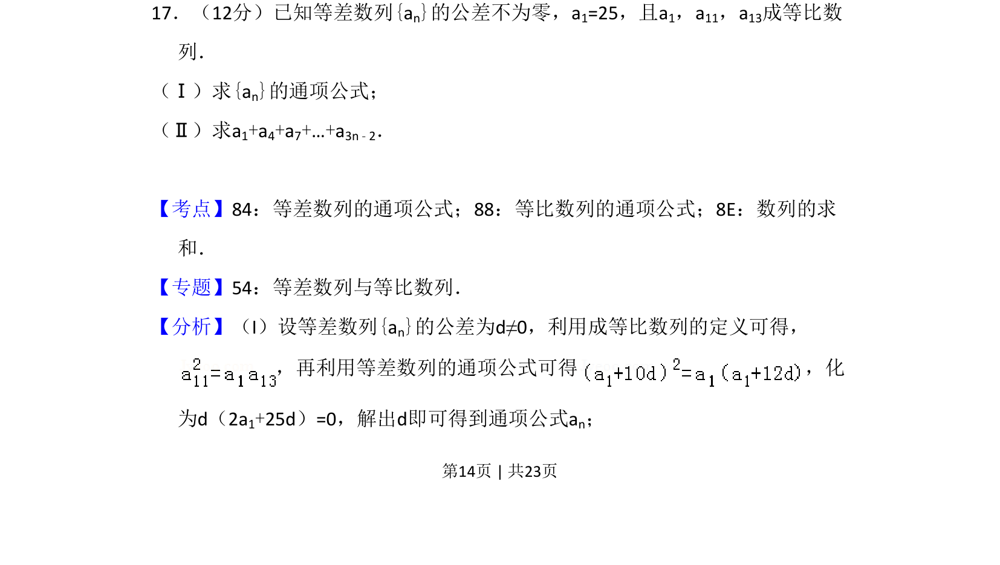
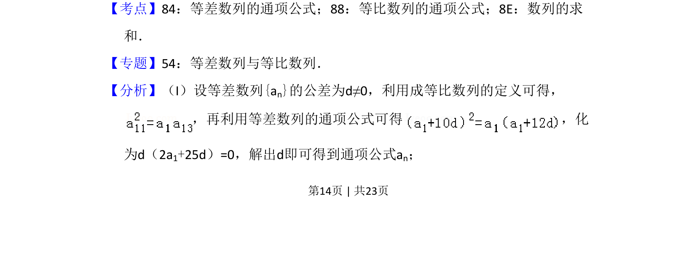
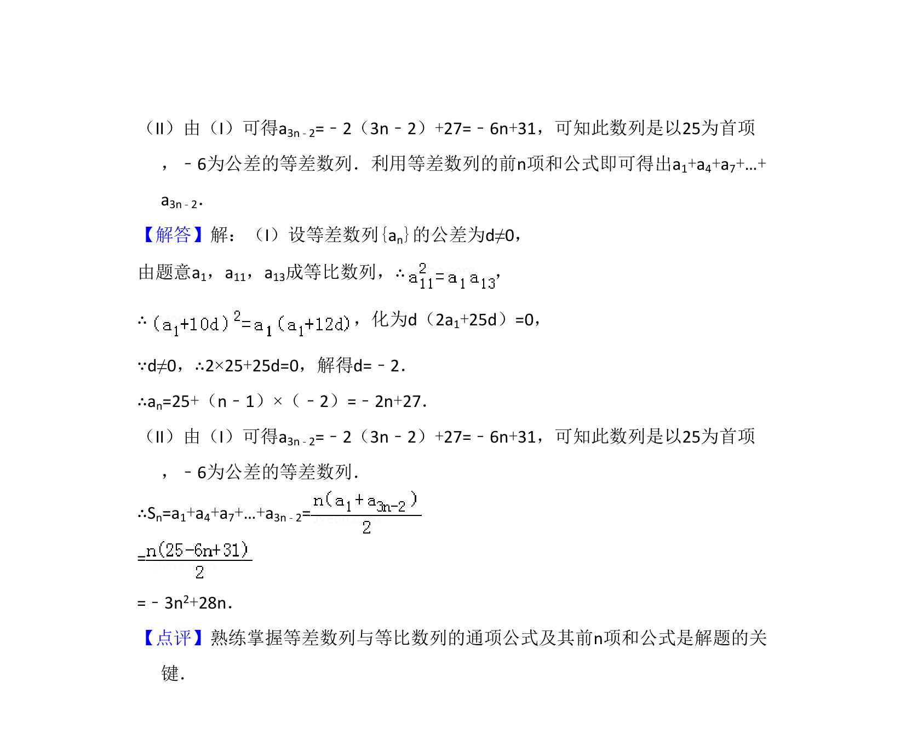

考点：等差数列通项公式 等比中项 数列求和

本题通过等差与等比数列综合条件求通项，并对特定间隔项进行求和。


📄 原 PDF 第 14 页：
素材/真题/吉林/2008-2024·（吉林）数学高考真题/2013年高考数学试卷（文）（新课标Ⅱ）（解析卷）.pdf
17．（12分）已知等差数列{an}的公差不为零，a1=25，且a1，a11，a13成等比数 列． （Ⅰ）求{an}的通项公式； （Ⅱ）求a1+a4+a7+…+a3n﹣2．
【考点】84：等差数列的通项公式；88：等比数列的通项公式；8E：数列的求 和．菁优网版权所有 【专题】54：等差数列与等比数列． 【分析】（I）设等差数列{an}的公差为d≠0，利用成等比数列的定义可得， ，再利用等差数列的通项公式可得 ，化 为d（2a1+25d）=0，解出d即可得到通项公式an；